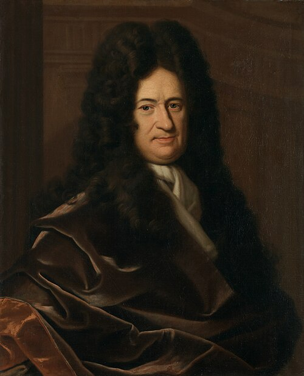
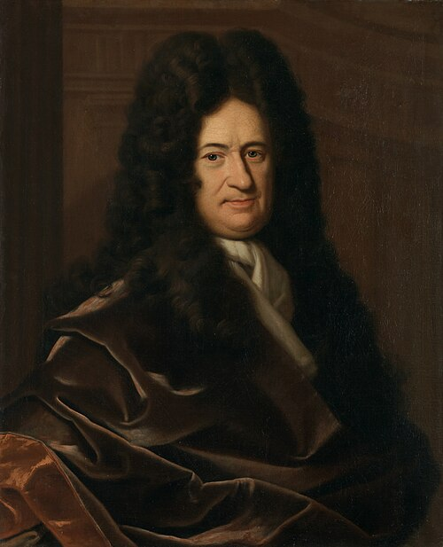
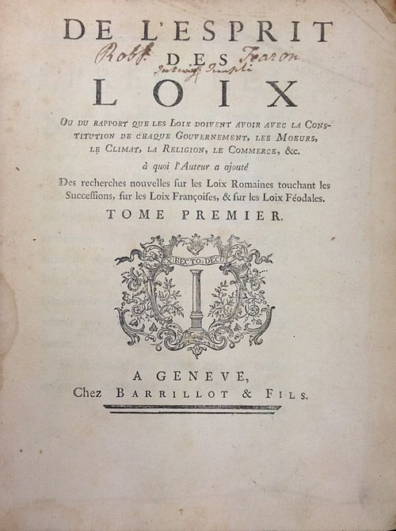
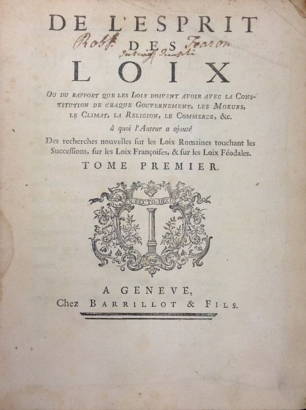
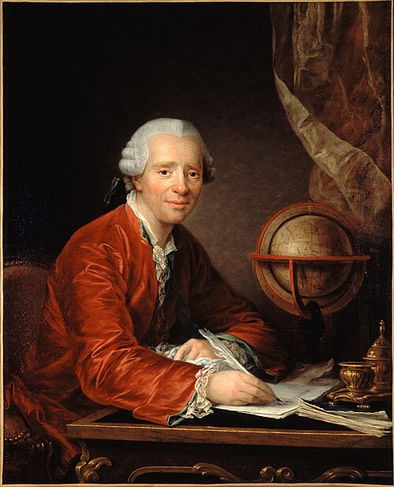
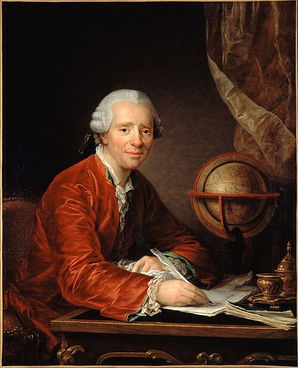
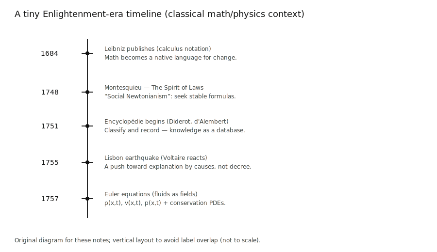
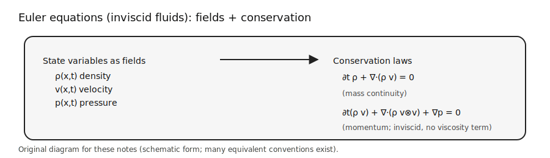

Interlude \(\alpha\) — Year 1757¶
\(\alpha\)1. A classical fluid-mechanics brief¶
Timeline and the world
1) Calculus (late 1600s)
 

2) Montesquieu and The Spirit of Laws (1748)
https://en.wikipedia.org/wiki/The_Spirit_of_Laws
 

3) Diderot, d’Alembert, and the Encyclopédie (1751)
https://en.wikipedia.org/wiki/Encyclop%C3%A9die
 

4) Voltaire and the Lisbon earthquake (1755) - Event: the 1755 Lisbon earthquake. - Links: https://en.wikipedia.org/wiki/Voltaire | https://en.wikipedia.org/wiki/1755_Lisbon_earthquake
5) Euler in Berlin (1755–1757) - Why this is “genesis” for fluid dynamics: fluids are treated as continuous fields, not discrete particles. - Academic note: Euler formalizes \(\rho\) (density) and \(p\) (pressure) as spatial fields and writes down the inviscid equations we still use today. - Primary source: Euler, L. (1757). “Principes généraux du mouvement des fluides”. Mémoires de l'Académie des Sciences de Berlin. - https://en.wikipedia.org/wiki/Euler_equations_(fluid_dynamics)




Close of this brief: the modern “flow matching” story is basically a machine-learning re-telling of classical transport, learn a time-dependent vector field, then integrate its trajectories. - Eulerian viewpoint: describe the whole medium by fields over space-time. - State variables live on space-time: \(\rho(x,t)\) (density), \(v(x,t)\) (velocity), and often \(p(x,t)\) (pressure) and/or \(e(x,t)\) (internal energy). - Think “field snapshot”: at any fixed \(t\), you can draw arrows \(v(\cdot,t)\) and a scalar map \(\rho(\cdot,t)\). Motion is encoded by how those fields evolve in \(t\). - The bridge to particle motion is the trajectory / characteristic \(x(t)\) that satisfies \(\dot x(t)=v(x(t),t)\). Along that path, the rate of change of any field \(f(x,t)\) is the material derivative (Eq. (1)).
-
That single operator \(D/Dt\) is the conceptual hinge: Eulerian fields + Newtonian time evolution.
-
Newton’s laws as constraints (continuum mechanics viewpoint):
- Setup: take any control volume \(\Omega\) fixed in space with boundary \(\partial\Omega\) and outward normal \(n\). Newton’s laws apply to the mass and momentum in that volume.
-
Mass conservation (Newton does not create/destroy mass): integral form (Eq. (2)), differential form (Eq. (3)).
-
Momentum conservation (Newton’s 2nd law, \(F=ma\)):
Integral form (Eq. (4)).
Here \(b(x,t)\) is body force per unit mass (e.g., gravity), and \(\sigma(x,t)\) is the Cauchy stress tensor encoding surface forces.
-
Newton’s 3rd law (action = reaction) implies local balance of internal forces, which yields a symmetric stress tensor in the classical setting: \(\sigma=\sigma^\top\).
-
For an inviscid fluid (no shear stress), stress reduces to isotropic pressure: \(\sigma = -p I\). Plugging this into the momentum balance yields the Euler equations:
Differential form (Eq. (5)).
The acceleration term \(\partial_t v + (v\cdot\nabla)v\) is exactly \(Dv/Dt\): Newton’s law written in Eulerian coordinates. - Closure: mass + momentum are not enough; you typically need an equation of state \(p=p(\rho,\ldots)\) and/or an energy equation. (For many ML “flow” analogies we keep only the kinematic core: a vector field that transports density.)
Numbered equations:
Material derivative
Mass conservation (integral form)
Continuity equation (differential form)
Momentum balance (integral form)
Euler equations (inviscid, differential form)
How flow models reuse this math (vs. what remains “physics constraints”):
- What a flow model actually uses (kinematics / transport):
- A learned time-dependent vector field \(v_\theta(x,t)\) defines an ODE \(\dot x(t)=v_\theta(x(t),t)\) (characteristics).
- Probability mass is transported by that field through the continuity / Liouville equation (Eq. (3)). This is the backbone behind CNFs and flow matching: it tells you how \(\rho(x,t)\) changes when particles move with velocity \(v\).
- A commonly used derived identity along trajectories is the log-density evolution:
- \(\frac{d}{dt}\log \rho(x(t),t) = -\nabla\cdot v(x(t),t)\).
- This is just Eq. (3) rewritten on characteristics (and is where the \(\nabla\cdot v\) term in continuous normalizing flows comes from).
-
Eq. (1) (material derivative) is often used as notation to make these “along a trajectory” statements compact, but it is not an extra assumption.
-
What is mostly not enforced in ML flows (dynamics / constitutive physics):
- Eq. (4) and Eq. (5) become relevant only if you want \(v\) to be physically correct for an actual fluid (pressure, stress, body forces, plus a closure / equation of state).
- In generative modeling, \(v_\theta\) is typically free to be whatever field best transports \(p_0\to p_1\); we do not solve for \(p\) or \(\sigma\) and we do not impose Newtonian momentum balance unless we are doing physics-informed modeling.